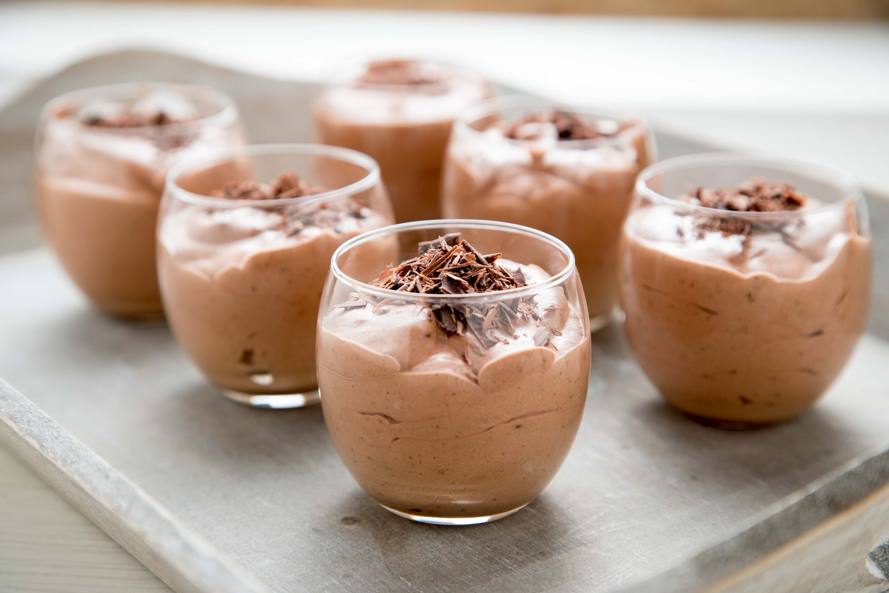

Postre: Mousse de Chocolate
Ingredientes
- 200g de chocolate negro (70% cacao)
- 4 huevos
- 50g de azúcar
- Una pizca de sal
Pasos
Paso 1: Derretir el chocolate al baño maría y dejar que se enfríe un poco.
Paso 2: Separar las yemas de las claras.
Paso 3: Batir las yemas con el azúcar hasta que la mezcla blanquee. Incorporar el chocolate derretido.
Paso 4: Batir las claras a punto de nieve con una pizca de sal.
Paso 5: Incorporar las claras a la mezcla de chocolate con movimientos suaves y envolventes.
Paso 6: Verter la mousse en copas individuales y refrigerar al menos 4 horas.